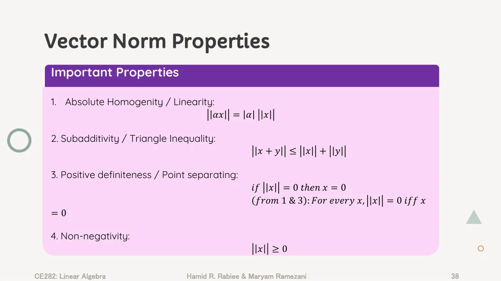
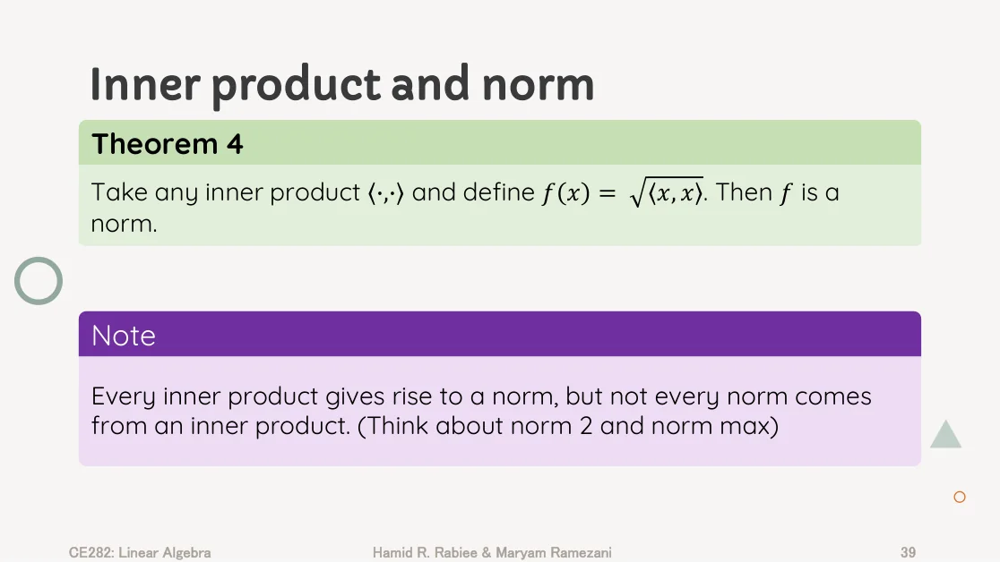
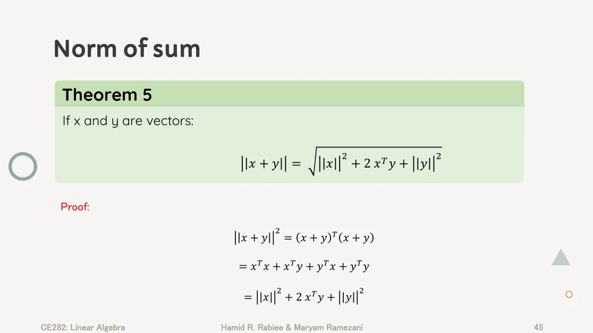
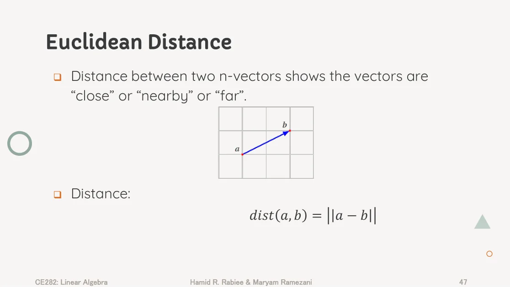

بخش ۶: Norm Space — فضای نرمدار
اسلایدهای ۳۳ تا ۴۹
۱. تعریف نرم

نرم برای اندازهگیری طول یا بزرگی بردار استفاده میشود.
یک نرم باید شرایط زیر را داشته باشد:
\[ \|x\|\geq0 \]
\[ \|x\|=0\iff x=0 \]
\[ \|\alpha x\|=|\alpha|\|x\| \]
\[ \|x+y\|\leq\|x\|+\|y\| \]
شرط آخر نامساوی مثلثی است.
۲. نرم اقلیدسی
نرم استاندارد بردار:
\[ x=(x_1,\ldots,x_n) \]
برابر است با:
\[ \boxed{\|x\|_2=\sqrt{x_1^2+\cdots+x_n^2}} \]
مثلاً:
\[ x=(2,-3,6) \]
داریم:
\[ \|x\|_2=\sqrt{4+9+36}=7 \]
۳. نرمالسازی
برای تبدیل بردار ناصفر به بردار یکه، آن را بر طولش تقسیم میکنیم:
\[ \boxed{q=\frac{x}{\|x\|}} \]
مثلاً:
\[ x=(3,4) \]
چون:
\[ \|x\|=5 \]
داریم:
\[ q=\left(\frac35,\frac45\right) \]
و:
\[ \|q\|=1 \]
۴. ارتباط ضرب داخلی و نرم

هر ضرب داخلی، یک نرم ایجاد میکند:
\[ \boxed{\|x\|=\sqrt{\langle x,x\rangle}} \]
اما هر نرم لزوماً از ضرب داخلی به وجود نمیآید.
مثلاً نرمهای \(L_1\)، \(L_2\) و \(L_\infty\) را مقایسه کن:
\[ \|x\|_1=\sum_i|x_i| \]
\[ \|x\|_2=\sqrt{\sum_i x_i^2} \]
\[ \|x\|_\infty=\max_i|x_i| \]
برای \(x=(3,-4)\):
\[ \boxed{\|x\|_1=7,\quad\|x\|_2=5,\quad\|x\|_\infty=4} \]
۵. اثبات اینکه نرم ناشی از ضرب داخلی معتبر است
در اسلایدهای ۳۹ تا ۴۱، استاد سه خاصیت نرم را بررسی میکند.
مثبتمعین بودن مستقیماً از ضرب داخلی میآید.
برای همگنی:
\[ \|\alpha x\| =\sqrt{\langle\alpha x,\alpha x\rangle} =\sqrt{|\alpha|^2\langle x,x\rangle} =|\alpha|\|x\| \]
برای نامساوی مثلثی باید از کوشی–شوارتز استفاده کنیم.
۶. نامساوی کوشی–شوارتز
\[ \boxed{|\langle x,y\rangle|\leq\|x\|\|y\|} \]
برای اثبات، اگر \(y\neq0\)، در فضای حقیقی تعریف میکنیم:
\[ r=x-\frac{\langle x,y\rangle}{\|y\|^2}y \]
چون:
\[ \|r\|^2\geq0 \]
با بسط رابطه نتیجه میگیریم:
\[ \|x\|^2-\frac{\langle x,y\rangle^2}{\|y\|^2}\geq0 \]
پس:
\[ |\langle x,y\rangle|^2 \leq\|x\|^2\|y\|^2 \]
که همان نامساوی موردنظر است.
تساوی دقیقاً وقتی اتفاق میافتد که بردارها وابستهٔ خطی باشند.
مثال اضافهٔ ۱: اثبات یک نامساوی
ثابت کن:
\[ (a+b+c)^2\leq3(a^2+b^2+c^2) \]
دو بردار انتخاب میکنیم:
\[ x=(a,b,c),\qquad y=(1,1,1) \]
از کوشی–شوارتز:
\[ |x^Ty|^2\leq\|x\|^2\|y\|^2 \]
پس:
\[ (a+b+c)^2\leq3(a^2+b^2+c^2) \]
تساوی زمانی است که:
\[ a=b=c \]
مثال اضافهٔ ۲: نامساوی انتگرالی
ثابت کن:
\[ \left(\int_0^1xf(x)\\,dx\right)^2 \leq\frac13\int_0^1f(x)^2\\,dx \]
اینجا ضرب داخلی توابع داریم:
\[ \langle f,g\rangle=\int_0^1f(x)g(x)\\,dx \]
تابع \(g(x)=x\) را انتخاب کن.
از کوشی–شوارتز:
\[ |\langle f,g\rangle|^2 \leq\langle f,f\rangle\langle g,g\rangle \]
و:
\[ \langle g,g\rangle=\int_0^1x^2\\,dx=\frac13 \]
در نتیجه همان نامساوی ثابت میشود.
۷. نامساوی مثلثی

از بسط نرم:
\[ \|x+y\|^2 =\|x\|^2+2\langle x,y\rangle+\|y\|^2 \]
و کوشی–شوارتز:
\[ \|x+y\|^2 \leq\|x\|^2+2\|x\|\|y\|+\|y\|^2 \]
پس:
\[ \boxed{\|x+y\|\leq\|x\|+\|y\|} \]
۸. قانون متوازیالأضلاع
با جمع دو رابطهٔ:
\[ \|x+y\|^2=\|x\|^2+2\langle x,y\rangle+\|y\|^2 \]
و:
\[ \|x-y\|^2=\|x\|^2-2\langle x,y\rangle+\|y\|^2 \]
میرسیم به:
\[ \boxed{ \|x+y\|^2+\|x-y\|^2 =2\|x\|^2+2\|y\|^2 } \]
این قانون برای تشخیص نرمهای ناشی از ضرب داخلی مهم است.
۹. Metric — فاصله

نرم طول یک بردار را مشخص میکند؛ فاصله، میزان دور بودن دو بردار را.
فاصلهٔ ناشی از نرم:
\[ \boxed{d(x,y)=\|x-y\|} \]
مثلاً:
\[ x=(1,2),\qquad y=(4,6) \]
\[ d(x,y)=\sqrt{(4-1)^2+(6-2)^2}=5 \]
چهار ویژگی متریک عبارتاند از نامنفی بودن، صفر شدن فقط برای دو نقطهٔ یکسان، تقارن و نامساوی مثلثی.
نکتهٔ پایانی فصل ۸
این زنجیره را به خاطر بسپار:
\[ \boxed{ \text{Inner Product}\Rightarrow \text{Norm}\Rightarrow \text{Metric} } \]
برعکس آنها لزوماً برقرار نیست.